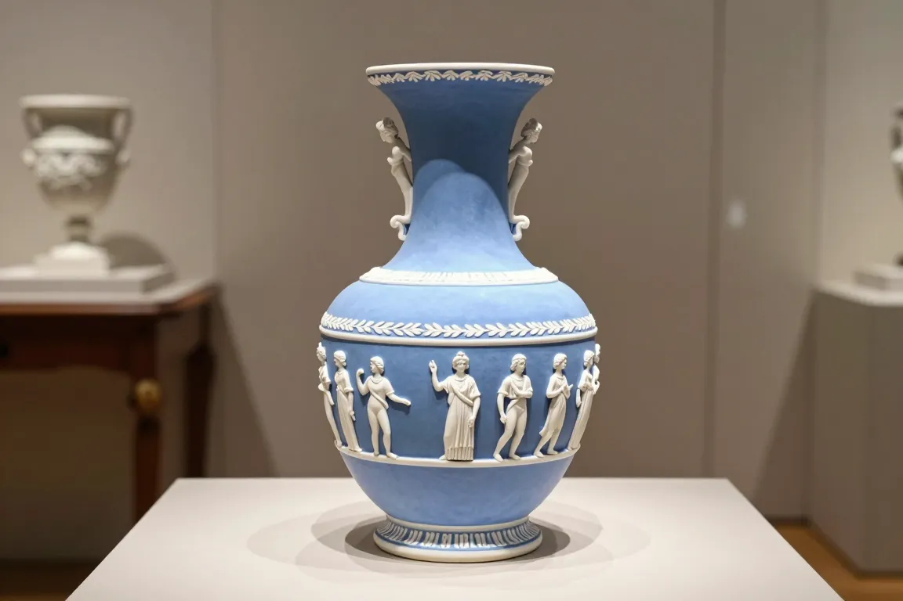

Тонкая плотная неглазурованная каменная масса, которую Джосайя Веджвуд делал с 1775 года. Её красят в бледно-голубой, зелёный или сиреневый цвет, и она несёт белые рельефные фигуры в классической манере.

Главная идея
Матовая цветная каменная масса с белыми греческими и римскими рельефами позволяет английской фабрике делать античный мир для библиотечного стола.
Принципы дизайна
Красьте кобальтом весь черепок, а не только поверхность, чтобы синий был виден в каждом сколе.
Оставляйте поверхность неглазурованной и тонко отполированной, чтобы она выглядела матовым бархатом.
Прессуйте каждый белый рельеф в форме-кувшине толщиной 1–3 мм и приклеивайте к влажному черепку водой.
Берите фигуры с греческих ваз и римских гемм: танцующие женщины, жертвоприношения, Амур и музы.
Берите сплошную яшму для тонких вещей, а яшмовое окунание, тонкую цветную кожу на белом черепке, для более дешёвых.
Делите поверхность на пояса: кайма из лавра или ключа, главный фриз и простой поддон.
Обжигайте черепок один раз до полной плотности примерно при 1200–1250 °C.
Ставьте на дно название фабрики, вдавленное в глину.